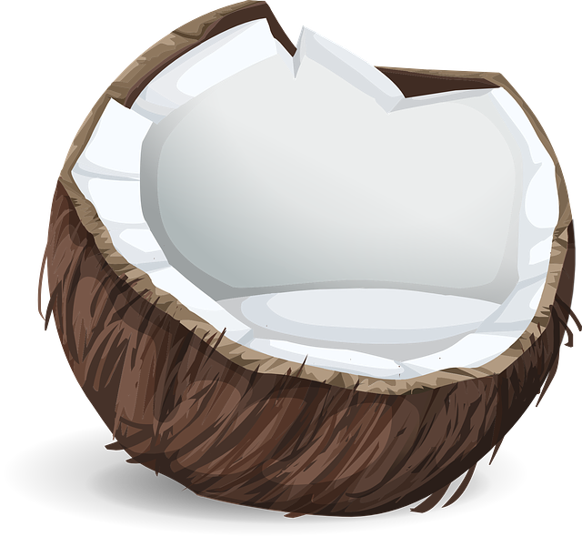
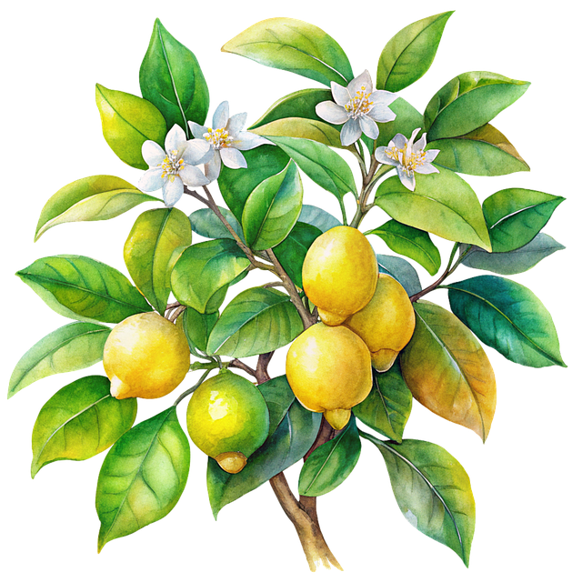
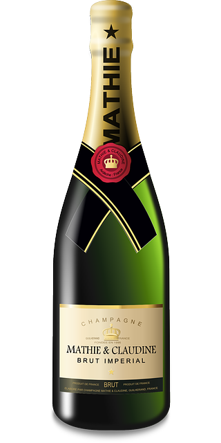
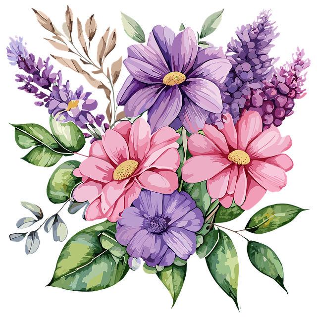
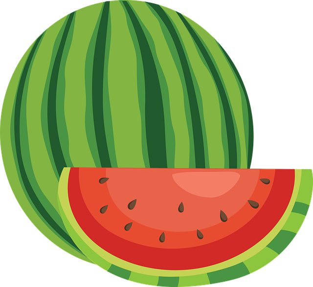

Make sure that the flowers you use are not contaminated with pesticides. Take plants from organic farming or from your own garden.
Check the plants. If you don't know it, it's better to leave it out.
Poisonous plants must not be used
, even if there should be hardly any toxins in the flowers themselves.
Poisonous plants include: Christmas roses, lily of the valley, oleander, angel trumpets and autumn crocus
.
Essentially all herbs are edible, especially those of basil (especially those with the scent of cloves), borage, lemon balm, dill, sweet nettle and nasturtium. Likewise the flowers of the umbelliferous plants such as chervil, horseradish, lavender, marjoram, oregano, mint, rosemary, sage, chives, sweet umbel, thyme and woodruff.
click here for wonderful recipies (in German only)
click here for wonderful recipies (in English only)
click here to get back to flower page

 
